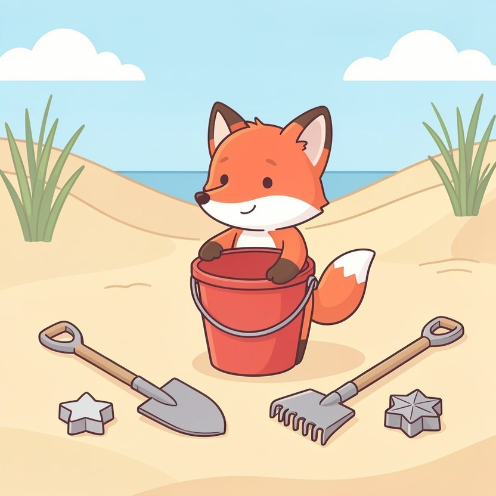

Titistoire › Les Étoiles (3-6 ans)
Filou et le plus beau château de sable
Une histoire de Filou le renard pour parler de : prêter ses jouets.

▶ Écouter et regarder l'histoire
Gratuit, sans inscription : la voix lit, le texte suit mot à mot, les images tournent comme dans un album.
Le texte de l'histoire
Cet été, Filou passe ses vacances à la plage des Dunes. Et il a apporté son trésor : un grand seau rouge, trois pelles, un râteau, et des moules en forme d'étoile. Il les aligne fièrement sur le sable.
Il a un grand projet. Le plus haut, le plus beau château de sable jamais bâti. Avec quatre tours, un pont, et, pour drapeau, une plume de mouette.
« Et je le ferai tout seul, annonce-t-il en se rengorgeant. Facile ! Comme ça, tout le monde saura que c'est le mien. »
Un petit crabe s'approche, en trottinant de côté. « Il est beau, ton seau. Tu me prêtes une pelle ? Tu en as trois. » « Non. J'en ai besoin. » « Des trois ? » « Des trois. »
Rosie arrive avec Pompon. « On peut t'aider ? Je sais faire des tours très hautes ! » Filou écarte les bras devant son chantier. « Pas touche ! C'est MON château. Allez jouer plus loin. »
Ils s'éloignent, la mine basse. Avec le râteau, Filou trace un grand rond autour de son chantier. « Défense d'entrer. »
Toute la matinée, il creuse, il tasse, il démoule. C'est long, tout seul. Il faut galoper jusqu'à l'eau, revenir, repartir, le seau au bout de la patte. Le sable sèche plus vite qu'il ne construit.
Un peu plus loin fusent des rires. Rosie, Pompon et le petit crabe façonnent quelque chose, rien qu'avec leurs pattes. C'est tout biscornu. Et ils ont l'air de s'amuser comme des fous.
« Pfff. Leur château est moche », bougonne Filou, le nez en l'air. Lui, il n'a pas le temps de rire. Une quatrième tour l'attend.
À quatre heures, c'est terminé. Quatre tours, un pont, le drapeau. Une splendeur. Filou recule de trois pas pour l'admirer. « Venez voir ! Venez tous voir mon château ! »
Ses amis viennent voir. « Il est beau », disent-ils poliment. Puis ils repartent jouer, sans lui. Filou reste planté là, à côté de son chef-d'œuvre. C'est curieux : il s'imaginait qu'il serait plus content.
Et pendant ce temps, derrière lui, tout doucement, la mer monte.
Une première vague vient lécher la muraille. Schlip. Un pan de sable s'effondre. « Hé ! » Filou empoigne une pelle. Il rebouche. Une deuxième vague. Schlip, schlip.
Il court à gauche, il court à droite. Vite, un fossé ! Vite, une digue ! Mais il n'a que deux pattes, et la mer en a mille.
« Au secours ! Mon château ! » Le pont s'écroule dans l'écume. Une tour vacille. Tout seul, il n'y arrivera jamais.
Rosie lève la tête. Elle pourrait répondre : « Débrouille-toi, c'est TON château. » Une seconde, elle le pense très fort. Puis elle s'élance. Les autres aussi.
« Les pelles ! s'égosille Filou. Prenez les pelles ! Le seau ! Tout ce que vous voulez ! » Le petit crabe saisit une pelle dans chaque pince. Pompon traîne le râteau, deux fois grand comme lui.
Ils creusent un fossé géant, ils élèvent un rempart. Rosie tasse, le crabe creuse, Pompon transporte de l'eau dans ses oreilles. La vague arrive… et s'arrête net au pied de la digue.
Sauvé ! Enfin, presque. Il manque le pont, et une tour. Filou contemple les dégâts. Puis il regarde ses trois amis, barbouillés de sable jusqu'aux yeux.
« Vous… vous voulez bien m'aider à le refaire ? » « C'est plus TON château, alors ? » le taquine Rosie, l'air de rien. Du bout de la patte, Filou efface le grand rond. « Non. C'est le nôtre. »
Rosie rebâtit la tour, encore plus haute. Le crabe creuse des douves, remplies de vraie eau. Pompon plante des coquillages partout, même là où il ne faut pas. C'est tout de travers. C'est bien mieux.
Le soir, la grande marée finit par tout emporter. La digue, les tours, le drapeau. Assis côte à côte, ils regardent le château fondre dans l'eau, comme un sucre.
Filou s'attend à avoir du chagrin. Mais non. Le château s'en est allé, et il lui reste quelque chose quand même. Trois amis, et un rendez-vous demain matin.
Le lendemain, sur la plage des Dunes, un seau rouge attend au beau milieu du sable. Avec trois pelles plantées dedans, et un écriteau en algues. Dessus, Filou a écrit : « Servez-vous. »